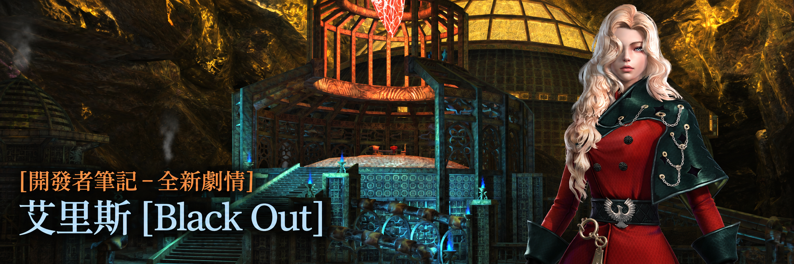
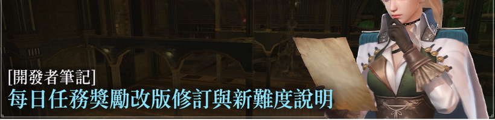
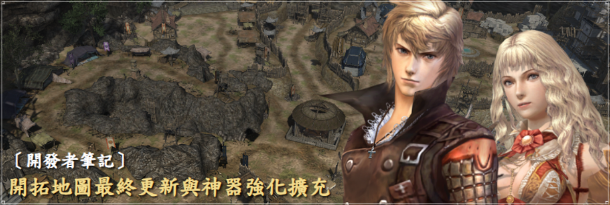

ISSUE 01
家族大廳與市場商店
擴充相關文字可能顯示亂碼或空白。
DOWNLOAD TERMINAL
目前已合併英文內容，其他項目將逐步更新。
包含主要漢化檔與支援中、泰、越文顯示的字體檔。
dictionary.ipf主要漢化檔案font00000.ipf中文字體顯示改善下載後請依照下方步驟安裝。建議先備份原始字體檔。
新增「秋日雙重好禮」、「我想成為大人！」、「2026 突破極限」
FIELD MANUAL · 01
三個步驟完成部署。安裝前請先關閉遊戲。
確認資料夾中有 dictionary.ipf 與 font00000.ipf。
若沒有修改 Steam 安裝位置，使用下方預設路徑。
C:\Program Files (x86)\Steam\steamapps\common\Granado Espada For SEA\ge將檔案放進 ge 資料夾，遇到同名檔案時選擇「取代目的地中的檔案」。
建議保留原本的 font00000.ipf，以免更換字體後不習慣。
FIELD MANUAL · 02
從遊戲的 ge 資料夾刪除 dictionary.ipf，即可移除漢化內容。
在收藏庫對 Granado Espada 按右鍵，選擇「內容」。
進入「已安裝檔案」，點選驗證，即可恢復原廠字體。
KNOWN ISSUES
以下項目仍需拆包解析，目前暫時無法修正與翻譯。
擴充相關文字可能顯示亂碼或空白。
部分怪物名稱目前無法套用漢化。
SEA CAMPAIGN LOG
點選活動圖片可查看完整繁體中文活動內容。

麗貝卡與雷文的兩項秋季任務，各有每日與累計獎勵。

向維奇接取每日任務，領取每日與累計完成獎勵。

挑戰 40 個關卡，領取首次通關及全通關獎勵。
完成四位客人的每日請求，提升好感度並領取獎勵。

完成每日活動任務，取得每日與累計完成獎勵。

完成每日活動任務，取得增益道具與累計獎勵。

完成每日活動任務，取得活動增益與累計獎勵。
任務活動結束，目前剩下禮包內容。
SEA 官方活動翻譯紀錄。

SEA 官方活動翻譯紀錄。
KOREAN SERVER NEWS
以下更新韓版官方新資訊，點選圖片可查看翻譯後的完整內容。

總司令卡蜜兒、梅莉塔、露切與黛莉亞，四位韓版新角色介紹。

招募角色、地下研究棟、每週任務、伊奈克斯防具與裝備飾品。

人類機神、全新防具、任務與角色。建議使用電腦觀看完整動畫。

每日任務獎勵改版修訂與新難度說明。
命運裝填、四種強化子彈與技能介紹。

副本與獎勵變動。
韓版新角色與技能介紹。

開拓地圖與神器系統更新。
SEA MAINTENANCE NOTICE
預設顯示維修時間，展開後可查看本次完整更新內容。
SGT／台灣時間
EST／美國東部時間
CET／歐洲中部時間
PATCH NOTES · 2026.11.18
巴塞爾蘭家族角色平衡調整。部分技能與狀態保留 SEA 英文名稱，方便在遊戲及官方表格中對照。
部分恢復 2024 年戰鬥平衡調整的數值。原本與女主人巴塞爾蘭搭配才有的加成，移至自身增益及重新設計的 Luminescence，單獨編入隊伍也能發揮完整表現。
| 項目 | 改版前 | 改版後 |
|---|---|---|
| 基本能力／角色增益 | 體力 60、智力 90。詠唱 Lv.2。 | 體力 55、智力 95。智力 Lv.2。 |
| Franticness | 普攻 10m。Lv.25 命中＋15、穿透＋25、免疫＋20。每增加 10 點智力，穿透＋4。每增加 1 點智力，對怪物技能傷害＋3%。 | 普攻 12m。Lv.25 命中＋35、穿透＋30、免疫＋15。每增加 10 點智力，穿透＋5。每增加 1 點智力，對怪物技能傷害＋2%。受到的魔法傷害與中減益機率各－10%。 |
| Electrification（技能） | SP 490，伯利恆之星 ×5，範圍 6m 內的自身角色。 | SP 500，伯利恆之星 ×10，改為自身增益。 |
| Electrification（增益） | 120 秒。攻擊等級＋1、攻擊力＋50%、命中－10、電擊穿透＋10、移動速度＋5%、移動速度上限＋0.50。 | 300 秒。攻擊等級＋1、攻擊力＋50%、電擊穿透＋25、移動速度＋10%、移動速度上限＋1.00。 |
| Luminescence（技能） | SP 535，伯利恆之星 ×5，範圍 6m 內的自身角色。 | SP 550，伯利恆之星 ×10。可對範圍 6m 內隊伍的高級魔法兵團多洛莉絲施加同名增益，依隊伍中該角色人數提高等級，最高 Lv.3。 |
| Luminescence（增益） | 250 秒。攻擊等級＋1、智力＋10、電擊抵抗＋5、免疫＋10。死亡時解除。 | 300 秒。 Lv.1：智力＋5、免疫＋5、電擊抵抗與上限各＋3、移動速度＋5%。 Lv.2：攻擊等級＋1、智力＋7、免疫＋7、電擊抵抗與上限各＋5、移動速度＋10%、速度上限＋0.50。 Lv.3：攻擊等級＋2、智力＋10、免疫＋10、電擊抵抗與上限各＋7、移動速度＋15%、速度上限＋1.00。 官方表格同時列出「死亡後保留」與「死亡時解除」，實際規則待官方釐清。 |
| Swift Hare | SP 560，前方 11m × 寬 8m，最多 6 名。施放時附加 Two Step。 | SP 600，前方 14m × 寬 8m，最多 8 名。命中敵方玩家時附加 Two Step。 |
| Ruinous Thunder | SP 615，距離 10m、半徑 5m，最多 7 名。施放時附加 Three Part。 | SP 650，距離 11m、半徑 7m，最多 10 名。官方將 Three Part 列於技能效果，未在此列另註施加時點。 |
| Magnitude Hare | SP 645，距離 9m、半徑 6m，最多 8 名。施放時附加 Four Flush。 | SP 700，距離 11m、半徑 9m，最多 14 名。命中敵方玩家時附加 Four Flush。 |
| Grand Finale | SP 785，10m 內最多 15 名。施放時附加 High Five。 | SP 750，12m 內最多 15 名。命中敵方玩家時附加 High Five。 |
| 以上四個攻擊技能的共通變更 | 給予敵方玩家 Electrostatic 的機率 35%，無視狀態異常抵抗。無視有 Lapin 的敵人 3 點屬性抵抗。依命中目標數提高傷害，最多 2 倍（Grand Finale 最多 3 倍）。 | 命中敵方玩家時以 45% 機率附加 Electrostatic，無視狀態異常抵抗。有 Luminescence 時，對敵方玩家的技能傷害為 3 倍。 |
| Two Step | 5 秒。受到 Image Residuelle 攻擊時，無視屬性抵抗 2。 | 15 秒。受到 Franticness 姿勢技能攻擊時，無視電擊抵抗 2。已有 Three Part、Four Flush 或 High Five 時無法套用。 |
| Three Part | 5 秒。受到 Belle Contrainte 攻擊時，無視屬性抵抗 3。 | 15 秒。受到 Franticness 姿勢技能攻擊時，無視電擊抵抗 3。已有 Four Flush 或 High Five 時無法套用，會取代 Two Step。 |
| Four Flush | 5 秒。受到 Rev Perdue 攻擊時，無視屬性抵抗 4。 | 15 秒。受到 Franticness 姿勢技能攻擊時，無視電擊抵抗 4。已有 High Five 時無法套用，會取代 Two Step 與 Three Part。 |
| High Five | 5 秒。受到 Arcenciel 攻擊時，無視屬性抵抗 5。 | 15 秒。受到 Franticness 姿勢技能攻擊時，無視電擊抵抗 5。會取代該姿勢的其他減益。 |
| Electrostatic | — | 施放電擊技能消耗 2 倍 SP。若因施放電擊技能使 SP 歸零，會附加 Discharge。 |
改版後以 Liberation 的魔力凝聚量為核心。凝聚型技能累積魔力，釋放型技能需要達到指定門檻，施放時消耗魔力。
| 項目 | 改版前 | 改版後 |
|---|---|---|
| 基本能力 | 感知 65。 | 感知 70。 |
| Serenity | 普攻 10m。每增加 10 點智力，穿透＋4。每增加 1 點智力，對怪物技能傷害＋3%。 | 普攻 12m。每增加 10 點智力，穿透＋3。每增加 1 點智力，對怪物技能傷害＋4%。受到的魔法傷害與中減益機率各－10%。 |
| Amplification（技能） | SP 500，伯利恆之星 ×5，範圍 6m 內的自身角色。 | SP 700，伯利恆之星 ×10，改為自身增益。施放時賦予 Amplification 與 Liberation，已有 Liberation 時魔力凝聚量＋30%。 |
| Amplification（增益） | 300 秒。命中＋10、念力穿透＋10、攻擊力＋50%、攻擊等級＋1、防禦等級＋1，附加 Avenir。Avenir 使高級魔法兵團多洛莉絲與女主人巴塞爾蘭的技能傷害為 6 倍，對玩家為 1.5 倍。 | 300 秒。攻擊等級＋1、攻擊力＋50%、念力穿透＋25。 |
| Liberation | — | 死亡後保留。施放凝聚型技能提高魔力凝聚量，最高 100%。對怪物攻擊力最多＋100%，移動速度最多＋20%。 達 30% 時，防禦等級＋1、智力最多＋10、移動速度上限最多＋1.00。 達 70% 時，攻擊等級＋1、詠唱時間最多－30%。 |
| Etoile Filante | SP 350，伯利恆之星 ×6，Lv.10 攻擊力 1,424%。距離 13m、半徑 3m，最多 3 名，冷卻 10 秒。對有 Lapin 的空中敵方玩家附加 Web。 | SP 100，伯利恆之星 ×3，Lv.10 攻擊力 2,040%。距離 12m、半徑 4m，最多 3 名，冷卻 4.5 秒。凝聚型，魔力凝聚量＋10%。不足 70% 時累積量加倍。 |
| Image Residuelle | SP 590，伯利恆之星 ×8，Lv.10 攻擊力 2,804%。前方 13m × 寬 12m，最多 10 名，冷卻 13 秒。附加 Lapin，對敵方玩家有 10% 機率附加 Reverse，無視狀態異常抵抗。原 Two Step 配合無視 2 點屬性抵抗（對玩家減半）。 | SP 400，伯利恆之星 ×10，Lv.10 攻擊力 3,740%。前方 15m × 寬 10m，最多 10 名，冷卻 12 秒。釋放型，至少 10% 才能施放，消耗 10%。 |
| Belle Contrainte | SP 650，伯利恆之星 ×8，Lv.10 攻擊力 2,820%。距離 14m、半徑 5m，最多 8 名，冷卻 17 秒。附加 Lapin，原 Three Part 配合無視 3 點屬性抵抗（對玩家減半）。 | SP 300，伯利恆之星 ×4，Lv.10 攻擊力 2,960%。距離 14m、半徑 6m，最多 6 名，冷卻 10 秒。凝聚型，魔力凝聚量＋20%。不足 70% 時累積量加倍。兩版均將可擊退目標拉至指定地點的中心。 |
| Rev Perdue | SP 670，伯利恆之星 ×13，Lv.10 攻擊力 3,040%。距離 10m、半徑 6m，最多 10 名，冷卻 21 秒。原 Four Flush 配合無視 4 點屬性抵抗（對玩家減半）。 | SP 600，伯利恆之星 ×12，Lv.10 攻擊力 3,980%。距離 10m、半徑 6m，最多 12 名，冷卻 20 秒。釋放型，至少 30% 才能施放，消耗 30%。對有 Lapin 的敵人無視狀態異常抵抗。 |
| Arcenciel | SP 805，伯利恆之星 ×14，Lv.10 攻擊力 4,722%。9m 內最多 10 名。附加 Lapin，5% 機率附加 Requiem。原 High Five 配合無視 5 點屬性抵抗（對玩家減半）。 | SP 800，伯利恆之星 ×18，Lv.10 攻擊力 5,300%。9m 內最多 14 名。釋放型，至少 40% 才能施放，消耗 40%。凝聚量 100% 時施放會獲得不可攻擊狀態，另有對怪物技能傷害 2 倍的效果，技能命中時扣除 100%。 |
| 以上五個攻擊技能的增傷 | 舊版可與 Franticness 配合，無視帶有 Lapin 的目標 3 點屬性抵抗。 | 有 Amplification 時，以上技能對怪物的技能傷害為 2 倍。魔力凝聚量低於 70% 時，凝聚型技能另列對怪物傷害 2 倍。達 70% 時，釋放型技能另列對怪物傷害 3 倍。 |
| Lapin | 受到 Franticness 姿勢技能攻擊時，無視屬性抵抗 3。 | 防禦等級－1、念力抵抗－15。與 Ziz Aftershock、Kul Udun、Flood Hazard、Malediz 歸為同組，彼此不能疊加，並抵銷 Polluted Water 與 Taabu。 |
兩名角色共用塞爾尼姿勢。下表同時列出共通改動及各角色的專屬改動。
| 項目 | 改版前 | 改版後 |
|---|---|---|
| Golden Chains | 20 秒。對玩家：攻擊力－80%、移動速度－100%，持續減少 HP。對怪物：攻擊力－20%。死亡後保留。 | 30 秒。受到的魔法傷害＋5%、火焰抵抗－5。死亡時解除，也可用解除減益的技能移除。 |
| 塞爾尼姿勢 | — | 中減益機率－10%。 |
| Fel Arkis | SP 450，伯利恆之星 ×3，Lv.10 攻擊力 988%。 | SP 500，伯利恆之星 ×5，Lv.10 攻擊力 1,000%。 |
| Fel Four-Chainer | SP 560，伯利恆之星 ×5，Lv.10 攻擊力 1,690%。距離 13m、半徑 4m，最多 9 名。100% 機率附加 Golden Chains。 | SP 550，伯利恆之星 ×8，Lv.10 攻擊力 1,700%。距離 14m、半徑 5m，最多 9 名。命中時附加 Golden Chains，無視狀態異常抵抗。 |
| Fel Lavassault | SP 560，伯利恆之星 ×7，Lv.10 攻擊力 770%。距離 13m、半徑 5m，最多 9 名。每次攻擊均附加 Golden Chains。 | SP 800，伯利恆之星 ×13，Lv.10 攻擊力 1,060%。距離 16m、半徑 6m，最多 12 名。依 Golden Miracle 等級增加技能傷害，最高 2 倍。 |
| Fel Sollast | SP 500，Lv.10 攻擊力 2,918%。距離 15m 內單一敵人。技能命中提高自身 Golden Miracle 等級。 | SP 600，Lv.10 攻擊力 2,920%。距離 16m 內單一敵人。命中時 Golden Miracle＋1，最高 Lv.5。 |
| Golden Miracle | 攻擊等級＋1，每級攻擊力＋5%、全屬性穿透＋5。 | 攻擊等級＋1，每級攻擊力＋10%、火焰穿透＋5。 |
| Bellmas（喬書亞） | SP 500，伯利恆之星 ×5。對喬書亞以外角色以一半技能等級套用。240 秒，魔法攻擊力＋1～60%、詠唱時間－1～20%，隨技能等級變動。 | SP 1,000，伯利恆之星 ×30。所有目標套用相同效果。300 秒，魔法攻擊力＋10%、詠唱時間－10%。 |
| Fel Aurel Tornado（喬書亞） | SP 820，Lv.10 攻擊力 928%。距離 13m、半徑 4m，最多 9 名。每次攻擊均附加 Golden Chains。 | SP 1,000，Lv.10 攻擊力 1,280%。距離 16m、半徑 6m，最多 12 名。依 Golden Miracle 等級增加技能傷害，最高 2 倍。 |
| Imaneti（女王） | 伯利恆之星 ×5，攻擊等級＋1。 | 伯利恆之星 ×10，攻擊等級＋1、防禦等級＋1、對怪物攻擊力＋50%。 |
| Fel Aurel Tempesta（女王） | SP 1,250，Lv.10 攻擊力 764%。10m 內最多 15 名，冷卻 40 秒。每次攻擊均附加 Golden Chains。 | SP 1,200，Lv.10 攻擊力 1,640%。10m 內最多 18 名，冷卻 35 秒。命中時附加 Golden Chains 並無視狀態異常抵抗，Golden Miracle＋1（最高 Lv.5），依等級增加技能傷害，最高 2 倍。 |
| 女王賽爾尼喬書亞的角色增益 | 攻擊力 Lv.1。 | 攻擊力 Lv.2。 |
重新調整布魯特的召喚與指揮，念力支援也能讓範圍內的自身角色受益。
| 項目 | 改版前 | 改版後 |
|---|---|---|
| 革命家姿勢 | — | 中減益機率－10%。 |
| 歌頌（技能） | 自身增益。 | 範圍 6m 內的自身角色。 |
| 歌頌（增益） | 600 秒。攻擊等級＋1、對怪物攻擊力＋50%、念力穿透＋30、詠唱時間－20%。 | 600 秒。攻擊等級＋1、對怪物攻擊力＋30%、智力＋5、念力穿透＋15、詠唱時間－10%。對 Isaac 本人的全部效果加倍。 |
| 軍人布魯特 | — | 布魯特已召喚時再次施放，可重新召喚。 |
| Ce Enemi | Lv.10 攻擊力 1,200%，冷卻 10 秒。對有 Rabbit Bruise 的敵人傷害 3 倍。Yes, Master 攻擊力 400%，無視敵人防禦數值 70。 | Lv.10 攻擊力 1,800%，每用一次後開始充能，冷卻 10 秒，最多可使用 3 次。對有 Rabbit Bruise 的怪物傷害 4 倍。Yes, Master 攻擊力 800%，無視敵人防禦數值 80。 |
| Le Gentiles | Lv.10 攻擊力 1,440%。前方 15m × 寬 6m，最多 8 名。有 60% 機率對敵方玩家施加 Panic，無視狀態異常抵抗。依範圍內敵人數給予布魯特 Rabbit Cheer 30 秒。 | Lv.10 攻擊力 2,500%。前方 17m × 寬 8m，最多 8 名。施放時給予布魯特 Rabbit Cheer 60 秒。 |
| Rabbit Cheer | 每級攻擊力＋10%、穿透＋3、攻擊速度＋3%。 | 攻擊力＋80%、穿透＋25、攻擊速度＋25%。 |
| Honore 與 Furry Hammer | Honore 的 Lv.10 攻擊力 1,399%。Furry Hammer 攻擊力 550%，無視敵人防禦數值 75，6.5m 內最多 6 名。 | Honore 的 Lv.10 攻擊力 900%。Furry Hammer 攻擊力 1,100%，無視敵人防禦數值 90，7m 內最多 6 名。 |
| Determine 與 Leporin Attack | Determine 的 Lv.10 攻擊力 2,250%。對有 Rabbit Bruise 的敵人，技能傷害 3 倍並無視念力抵抗 10。Leporin Attack 攻擊力 850%。 | Determine 的 Lv.10 攻擊力 2,840%。對有 Rabbit Bruise 的怪物，技能傷害 4 倍並無視念力抵抗 10。Leporin Attack 攻擊力 1,700%。 |
| 角色增益 | 魔法穿透 Lv.1。 | 魔法穿透 Lv.2。 |
月神的守護者 路與路的下列調整僅針對說明文字，實際效果維持原樣。
新增幼年絲蘭（Baby Silaen）。增益 Flutter of Baby Silaen：魔法攻擊力＋10%、電擊穿透＋10、移動速度＋10%、命中＋5、詠唱時間－5%。
特別獎勵於本次維護後結束，之後恢復原本的獎勵內容。
進行內部伺服器與系統例行維護。